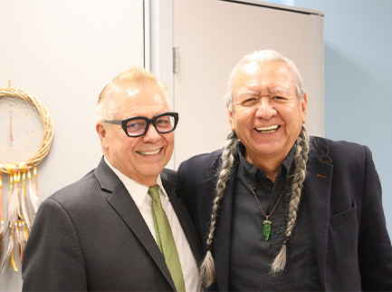
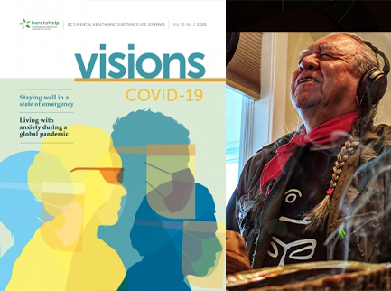

Speaking
Gerry has had more than 100 speaking engagements at over 15 universities and colleges, 20 health care organizations, 5 First Nation communities, and much more.
Read More

Professional Roles
Gerry has worked as an adjunct faculty member, Elder, Chief, Band Councillor, consultant, cultural advisor, and many other impactful roles.
Read More
Media and Publications
Gerry enjoys writing, publishing, and working with the media to support positive change.
Read More

Education and Training
Gerry has both formal and traditional training in counselling, human services, addictions, healing and more.
Read More